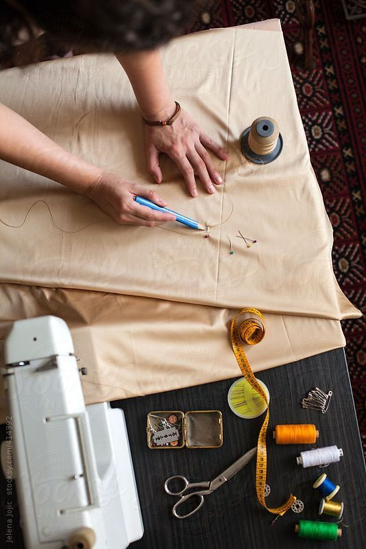

Somos dos amigas unidas por la amistad, la creatividad y las ganas de construir algo con sentido. En medio de una oportuncrisis, decidimos volver a lo que nos conecta: las manos en la tela, el corazón en cada puntada y el deseo de crear algo propio. Así nació este emprendimiento textil y artesanal, dedicado a las primeras infancias. Diseñamos y confeccionamos juegos y accesorios que estimulan, acompañan y abrazan los primeros años de vida. Cada pieza está hecha con materiales nobles, atención al detalle y, sobre todo, mucho amor.
Creemos en lo hecho a mano, en lo que tiene historia, en lo que se hace lento y con intención. Nuestro proyecto es también un camino de reconexión personal y colectiva: con nuestras habilidades, con el juego, con la infancia y con otras personas que valoran lo artesanal. Gracias por acompañarnos en este viaje ❤️❤️.
